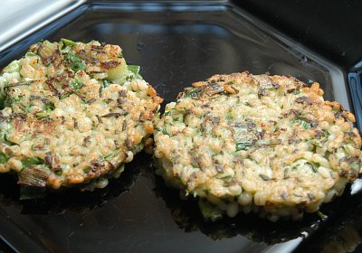

| Zutaten für 4 Personen: | |
| 150 g | Appenzeller Surchoix |
| 200 g | Rollgerste |
| Salz | |
| 1 | Zwiebel |
| 2 | Karotten |
| 1 Stück | Stangensellerie |
| 1 | Lauchstange |
| 1 Bund | Schnittlauch |
| 3 | Eier |
| Pfeffer | |
| Muskat | |
| Brat-Butter | |
Gerste in siedendem Salzwasser weichkochen. Dampfkochtopf(?)
Eier verquirlen,
Zwiebel hacken und dazugeben.
Karotten und Sellerie grob dazu raffeln,
Lauch in Räder schneiden und beigeben,
Schnittlauch fein schneiden und dazugeben.
Appenzeller raffeln und beigeben.
Wasser abgiessen und die Gerste dazugeben.
Würzen und gut mischen.
Brat-Butter erhitzen, die Gerstenmasse Löffelweise hineingeben und beidseitig braten.
Migros Werbung im Brückenbauer
Schmeckt ganz anständig. Ich hatte keine Rüebli und keinen Stangensellerie dafür Frühlingszwiebeln. War entsprechend etwas "lauchig". RE 8.10.2006
@LINKBACK_TAG@ @WAKELOCK@